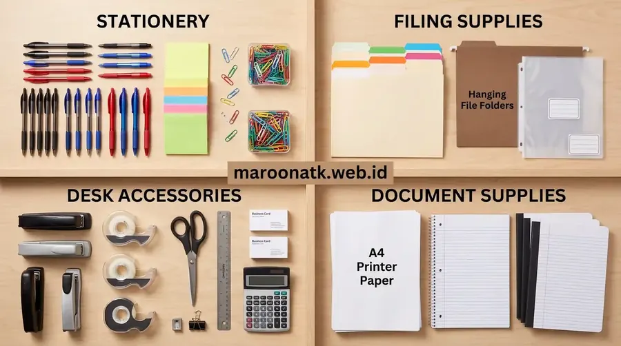

Mengapa Perusahaan Beralih ke Distributor ATK Resmi
Jawaban singkat: Membeli ATK langsung dari distributor ATK dapat membantu perusahaan mengelola kebutuhan dalam volume dan frekuensi yang lebih terstruktur dibanding pembelian eceran. Keuntungannya dapat mencakup koordinasi pemesanan, administrasi transaksi, repeat order, pengiriman, dan peluang mendapatkan skema pengadaan berdasarkan volume. Namun, harga dan fasilitas pembayaran tetap bergantung pada produk, jumlah pembelian, kebijakan distributor, serta kesepakatan B2B.
Dalam operasional harian perusahaan, kebutuhan perlengkapan kantor seperti kertas HVS, tinta printer, binder ordner, hingga peralatan tulis selalu berjalan terus-menerus. Pada skala kecil, pembelian eceran di toko fisik atau platform retail mungkin terasa fleksibel. Namun, seiring bertambahnya jumlah karyawan dan divisi, pembelian eceran secara sporadis kerap menimbulkan kendala administratif: puluhan nota terpisah, ketidaksesuaian spesifikasi barang, serta ketiadaan bukti potong pajak yang sah.
Bagi tim purchasing dan manajemen keuangan, bermitra dengan distributor ATK resmi berbadan hukum menghadirkan kerangka kerja pengadaan yang jauh lebih rapi, terukur, dan akuntabel. Melalui sistem kontrak atau paket pengadaan ATK berkala, operasional kantor dapat berjalan tanpa gangguan kekurangan sarana kerja.

Kriteria Evaluasi Supplier ATK Kantor Jakarta untuk Kontrak Jangka Panjang
Panduan menilai legalitas badan usaha, SLA pengiriman, dan kapasitas gudang sebelum menetapkan vendor utama.
Keuntungan Strategis Membeli dari Distributor ATK Resmi
Berikut adalah beberapa aspek fundamental yang menjadikan pembelian melalui distributor resmi lebih diunggulkan untuk lingkungan korporasi:
1. Pengadaan dalam Jumlah Besar (Bulk Procurement)
Distributor resmi memiliki fasilitas pergudangan dengan daya tampung yang memadai. Hal ini memungkinkan korporasi memesan barang habis pakai dalam jumlah besar sekaligus, memastikan ketersediaan barang (buffer stock) terjaga dengan baik tanpa risiko kehabisan stok mendadak saat dibutuhkan operasional kantor.
2. Dokumentasi Transaksi dan Kepatuhan Pajak
Salah satu hambatan utama pembelian eceran adalah kesulitan memperoleh faktur pajak standar. Distributor B2B berbadan hukum resmi seperti PT tertib menerbitkan Surat Penawaran Harga (SPH), Surat Jalan resmi, Invoice komersial, serta e-Faktur PPN 11% yang siap diaudit oleh internal maupun kantor pelayanan pajak.
3. Koordinasi Pengiriman Terjadwal
Alih-alih staf kantor repot bolak-balik membeli barang ke toko ritel, distributor menyediakan layanan logistik terkoordinasi langsung ke kantor atau titik loading dock perusahaan. Hal ini menghemat waktu kerja staf pengadaan dan meminimalisir biaya transportasi tersembunyi.
4. Kemudahan Proses Repeat Order
Setelah spesifikasi item terdaftar dalam sistem pengadaan, proses pemesanan ulang (repeat order) di bulan-bulan berikutnya menjadi sangat ringkas. Tim purchasing cukup menerbitkan Purchase Order (PO) berdasarkan daftar katalog yang telah disepakati sebelumnya.

Sistem manajemen pergudangan yang tertata memastikan setiap pesanan korporat dikemas dengan rapi dan dikirim tepat waktu sesuai kesepakatan.

Perbandingan Biaya Paket ATK vs Pembelian Satuan untuk Kantor
Analisis komparasi efisiensi pengeluaran kas kantor antara sistem paket terpadu versus belanja eceran acak.
Tabel Perbandingan: Pembelian Eceran vs Distributor ATK B2B
Berikut adalah perbandingan operasional antara metode pembelian eceran di toko umum dengan pengadaan melalui distributor ATK B2B resmi:
| Aspek Pengadaan | Pembelian Eceran / Toko Biasa | Distributor ATK B2B Resmi |
|---|---|---|
| Volume Pembelian | Umumnya dalam jumlah kecil atau terbatas | Dapat disesuaikan dengan kebutuhan volume B2B |
| Frekuensi Order | Seringkali berulang tanpa rencana pasti | Dapat direncanakan secara terjadwal (bulanan/triwulan) |
| Administrasi & Pajak | Transaksi terpisah, nota manual tanpa e-Faktur | Terkoordinasi dengan SPH resmi dan e-Faktur PPN 11% |
| Proses Repeat Order | Perlu mencari dan memesan ulang dari awal | Dikelola lebih terstruktur melalui PO berkala |
| Layanan Pengiriman | Bergantung pada kurir toko atau diambil mandiri | Dapat dikoordinasikan langsung ke lokasi kantor |
| Struktur Harga | Mengikuti harga ritel umum di pasar | Bergantung pada volume pembelian dan kesepakatan |
| Metode Pembayaran | Umumnya tunai langsung saat transaksi | Bergantung pada kebijakan supplier dan kesepakatan B2B |

Panduan Memilih Supplier ATK Jakarta Terpercaya untuk Instansi & Korporat
Langkah-langkah praktis dalam menyusun kontrak kerjasama pasokan barang habis pakai kantor.
Faktor yang Menentukan Efisiensi Kerjasama B2B
Penting untuk dicatat bahwa efisiensi harga dan kelancaran proses pengadaan tidak semata-mata terjadi otomatis, melainkan dipengaruhi oleh sejumlah variabel:
- Volume Pembelian: Pemesanan dalam jumlah partai besar membuka ruang negosiasi yang lebih fleksibel dibanding pesanan satuan.
- Jenis dan Spesifikasi Produk: Produk fast-moving seperti kertas HVS memiliki margin yang berbeda dengan item khusus seperti cartridge toner original atau brankas arsip.
- Frekuensi Pemesanan: Jadwal pengiriman konsisten mempermudah distributor merencanakan alokasi armada logistik.
- Kontrak Kerjasama: Perjanjian blanket order membantu mengikat kestabilan pasokan selama periode tertentu.
- Kebijakan dan Skema Pembayaran: Ketentuan Term of Payment (TOP) biasanya ditentukan setelah melalui proses verifikasi kelayakan kredit korporasi.
Konsultasikan Pengadaan ATK Korporat Anda Bersama Distributor Resmi
Layanan Penawaran Resmi, Dokumen Legal Lengkap, dan Pengiriman Terjadwal
Hubungi tim MAROON ATK untuk mendiskusikan kebutuhan pasokan alat tulis kantor perusahaan Anda dengan proses yang transparan dan profesional.
Kesimpulan: Transformasi Pengadaan ATK yang Lebih Tertata
Rangkuman Keputusan Procurement
Beralih dari pembelian eceran ke distributor ATK resmi merupakan langkah rasional bagi perusahaan yang mengutamakan kepatuhan tata kelola dan efisiensi waktu.
- Akuntabilitas Terjamin: Kelengkapan dokumen faktur pajak dan invoice resmi mempermudah proses rekonsiliasi keuangan.
- Pasokan Berkelanjutan: Mengurangi risiko terhentinya aktivitas administrasi akibat kehabisan perlengkapan kerja esensial.
- Kemitraan Jangka Panjang: MAROON ATK siap menjadi mitra rantai pasok perlengkapan kantor yang handal dan akuntabel.
Pertanyaan Umum (FAQ) Distributor ATK B2B
Keuntungan utama meliputi proses pengadaan yang terpusat, kemudahan pengelolaan repeat order, pengiriman logistik yang terkoordinasi, kelengkapan dokumen perpajakan seperti e-Faktur PPN, serta potensi skema pengadaan khusus berdasarkan volume pembelian korporat.
Tidak selalu mutlak lebih murah untuk setiap item satuan. Namun, distributor B2B menawarkan efisiensi total biaya operasional (TCO) melalui pemesanan dalam jumlah besar, stabilitas pasokan, dan administrasi transaksi yang terpadu dibanding transaksi eceran terpisah.
Ya. Distributor ATK resmi memiliki kapasitas pergudangan dan rantai pasok yang dirancang khusus untuk melayani kebutuhan volume besar secara berkala bagi perusahaan, lembaga pendidikan, maupun instansi pemerintah.

Arby Ardiansyah
Spesialis pengadaan perlengkapan kantor dengan pengalaman dalam standardisasi inventaris B2B, manajemen rantai pasok alat tulis, dan solusi efisiensi operasional korporat di Indonesia.